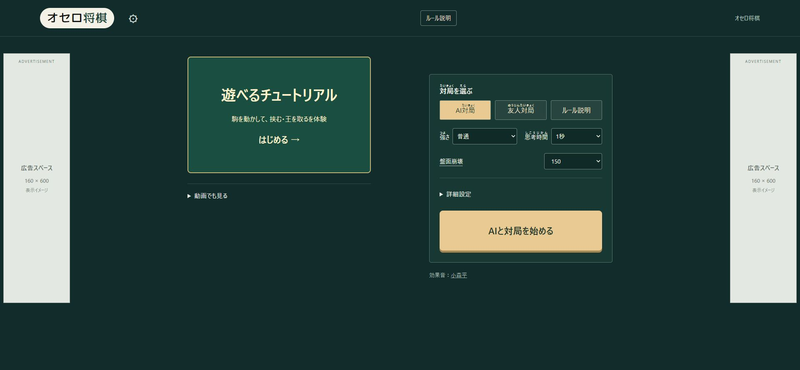
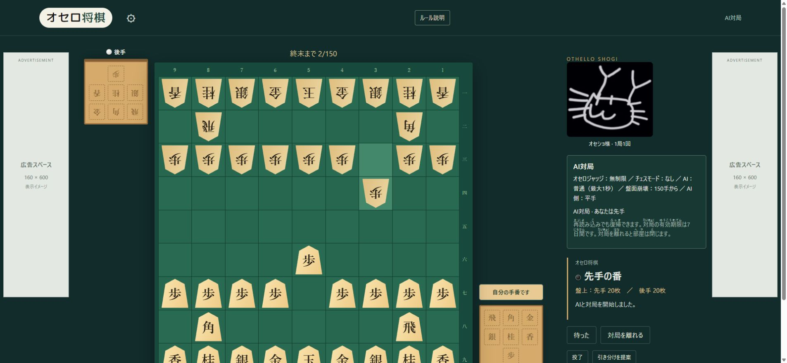
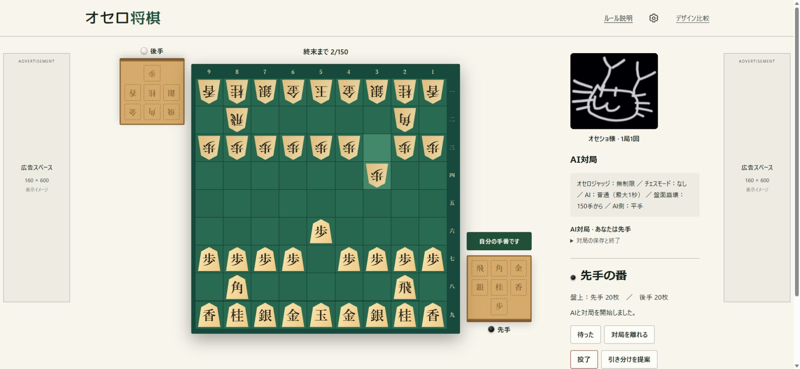

オセロ将棋、最初の画面から現在まで
Hallmark導入前の従来版と、今回の最新版をひと目で比較。
2026.10.02
Hallmark：全体を整理
練習と対局設定を分け、駒の絵を入口に。
カードや装飾に頼らない配置へ。
可読性：読める大きさと濃さに
主要な説明は14 → 16pxへ。
明暗の差・余白・ダーク配色を改善。
今回：細部の定型感を減らす
重複見出しを削り、入力欄を整列。
アイコン・ボタンの反応を統一。
導入前
最初の従来デザイン
現在
Hallmark ＋ 読みやすさ ＋ 細部の改善
開始メニュー
押す場所を明確に。チュートリアルに実際の駒を置き、オセロの黒白も添えました。


対局画面
説明を読みやすくし、重複するゲーム名と余白を整理。操作までの距離を短くしました。


設定画面
選択欄の幅と位置を揃え、ページへの移動と設定操作を区別。設定部分を拡大しています。